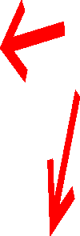
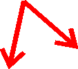
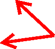
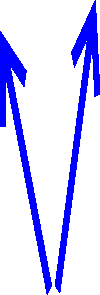
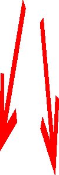
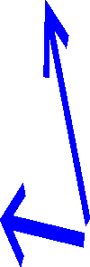

Skopie 1916 - 1917 panorama 2
Documentos de las guerras balcánicas
- Año
- 1916-1917
- Duración
- 00:12

Skopie a finales del siglo XIX. Vista de los terrenos sin edificar del barrio nuevo, en la margen derecha del Vardar. Al fondo se ve la fortaleza - Kale. A la derecha, la colina de Gazi Baba.

Finales del siglo XIX. Los terrenos sin edificar de la margen derecha del Vardar. Solo unas pocas casas junto al río. Al fondo se alza la fortaleza de Skopie - Kale.

Skopie en 1888, fotografiada desde la colina de Gazi Baba hacia la fortaleza de Skopie - Kale.

Vista de la ciudad desde la Torre del Reloj hacia el norte de Skopie, con los antiguos barrios turcos y macedonios. Al fondo, la colina de Gazi Baba. (finales del siglo XIX)

Skopie - vista de la parte antigua con el antiguo bazar. Al fondo se ve la mezquita de Mustafa Pachá y, a su derecha, la fortaleza de Skopie - Kale con los cuarteles. En primer plano, casas del barrio de Gazi Baba - finales del siglo XIX.

Skopie, principios del siglo XX. Vista desde la Torre del Reloj del antiguo centro público, comercial y artesanal, con el bazar. Nuevas formas arquitectónicas en el viejo tejido urbano. Al fondo dominan la mezquita de Mustafa Pachá y la fortaleza con los cuarteles. Debajo, la mezquita de Pachá Yiğit Bey, la más antigua de Skopie (ya no existe).

Vista desde la fortaleza de Skopie - Kale hacia el monte Vodno. Justo debajo de la Kale, el barrio judío. Se ven el Vardar y el puente de piedra y, junto a él, la mezquita Burmali
- principios del siglo XX.

Vista desde la fortaleza de Skopie - Kale hacia el monte Vodno. Justo debajo de la Kale, el barrio judío. Se ven el Vardar y el puente de piedra y, junto a él, la mezquita Burmali
- principios del siglo XX.

Vista del barrio judío y la ciudad desde la fortaleza de Skopie - Kale. En primer plano, la sinagoga (sin techo). A la derecha, el puente de piedra - principios del siglo XX.

Vista desde la fortaleza de Skopie - Kale hacia el puente de piedra y la mezquita Burmali. Es interesante ver lo poco que se había extendido la ciudad por la margen derecha del Vardar. La foto es de finales del siglo XIX. Muy al fondo se ve la cervecería, a la que entonces llamaban la «Birarija». En primer plano, parte del barrio judío.

Vista panorámica de la zona central de la ciudad a finales del siglo XIX. En el centro, el teatro turco. En la margen derecha del Vardar, junto al puente de piedra, se ve la mezquita Burmali.

La foto se tomó desde las murallas de la fortaleza de Skopie - Kale antes de la Primera Guerra Mundial. Al pie, viviendas del barrio judío, la escuela y la sinagoga. A la izquierda, la iglesia de San Demetrio.

Toma panorámica desde la fortaleza de Skopie - Kale a principios del siglo XX. En primer plano, algunos soldados del recinto del cuartel. Al pie se ven casas del barrio judío y de Pajko, luego el puente de piedra y, junto a él, la mezquita Burmali. Más allá se extiende la parte nueva de Skopie y, a lo lejos, la fábrica de cerveza.

Vista desde la fortaleza de Skopie - Kale hacia los montes Vodno y Kitka. En el centro de la foto se ve el puente de piedra y, a su lado, la mezquita Burmali.

Skopie durante la Primera Guerra Mundial. En la foto se ve un campamento del ejército serbio cerca de la iglesia Sveti Spas, cuyo campanario aparece al fondo.

Panorama de Skopie - años 1920. Al pie, el barrio judío con la escuela y la sinagoga. Se ve la construcción del Teatro Nacional.

Imagen panorámica de Skopie (hacia 1920). En esta foto es interesante ver el monte Vodno, o mejor dicho su «desnudez», a diferencia de hoy, cuando está cubierto de bosques espléndidos. La reforestación se hizo tras la Segunda Guerra Mundial con acciones juveniles organizadas. En primer plano, el barrio judío con la sinagoga y la escuela judía.

Vista de Skopie desde la fortaleza de Skopie - Kale. En primer plano, el barrio judío con la sinagoga, la escuela y el Teatro Nacional. A la izquierda de la foto se ven el puente de piedra y el Casino de Oficiales en construcción - años 1920.

Skopie, años 1920. Vista desde la fortaleza de Skopie - Kale del barrio judío.

Fotografía panorámica de Skopie desde Gazi Baba hacia la fortaleza de Skopie - Kale. (principios del siglo XX)

La mezquita de Mustafa Pachá al fondo y, debajo, en parte, la mezquita de Pachá Yiğit Bey, la más antigua de Skopie. (ya no existe)

Vista de Skopie desde Gazi Baba. En primer plano, el denso caserío de los barrios. Al fondo, la mezquita de Mustafa Pachá y los cuarteles en la parte sur y norte de la fortaleza - Kale.

Vista de la parte antigua de la ciudad en la margen izquierda del Vardar. En primer plano, casas particulares. En el centro, el conjunto del antiguo bazar de Skopie. Al fondo domina la mezquita de Mustafa Pachá y, tras ella, la cárcel y los cuarteles de la Kale. Bajo la mezquita de Mustafa Pachá, la de Pachá Yiğit Bey, la más antigua de Skopie (ya no existe). (años 1920)

Panorama del antiguo tejido urbano, transformado por la europeización y la construcción de edificios de rasgos clásicos, eclécticos y otros. La foto se tomó desde la Torre del Reloj hacia la mezquita de Mustafa Pachá. A la derecha se ve la fortaleza de Skopie - Kale con los cuarteles - años 1920.

Čair - parte antigua de la ciudad (el actual municipio de Čair). En primer plano, la mezquita de Gazi Isa Bey; al fondo, la de Yahya Pachá. - hacia 1920

Panorama de Skopie - la margen izquierda con el barrio de Čair y parte de Gazi Baba. En primer plano, la mezquita de Gazi Isa Bey; al fondo, la de Yahya Pachá. (años 1920)

La Torre del Reloj - construida en 1566-72. Al fondo, las mezquitas de Gazi Isa Bey y de Yahya Pachá - años 1920.

Panorama de la parte antigua de la ciudad, hacia Gazi Baba. Vista desde la fortaleza de Skopie - Kale. A la derecha del todo, la mezquita del sultán Murad y, a su izquierda, la Torre del Reloj. En la misma línea a la izquierda, la mezquita de Gazi Isa Bey - años 1920.

Vista panorámica de la zona central de la ciudad. - años 1920.

Paisaje invernal del centro de la ciudad. En primer plano, edificios construidos de forma caótica, donde más tarde se levantó el Banco Nacional. La terraza visible es un cine de verano: los dos postes del fondo sostienen la pantalla, y en el espacio vacío se colocaban las sillas. Arriba a la izquierda se ve la fortaleza de Skopie - Kale. (años 1920)

Fotografía aérea del centro (hacia 1928). Dominan el Casino de Oficiales, el puente de piedra, el Teatro Nacional y el barrio judío. Río arriba se ve el puente de madera que lleva al Teatro Nacional. Arriba a la derecha, parte de la Kale. En primer plano, parte del barrio de Novo Maalo. La foto es de verano, porque el río está muy bajo.

Fotografía aérea del centro (hacia 1928). Dominan el Casino de Oficiales, el puente de piedra, el Teatro Nacional y el barrio judío. Río arriba se ve el puente de madera que lleva al Teatro Nacional. Arriba a la derecha, parte de la Kale. En primer plano, parte del barrio de Novo Maalo. La foto es de verano, porque el río está muy bajo.

Fotografía aérea panorámica de Skopie. Abarca sobre todo la margen derecha del Vardar, dominada por el Casino de Oficiales. A la derecha, el palacio Ristić. Delante, la plaza con zonas verdes en el centro. Se ven también coches de caballos, cuya parada principal era la plaza. El puente de piedra une ambas orillas. Abajo a la derecha se ve el Teatro Nacional, un edificio precioso que añoran muchos viejos vecinos de Skopie.

Toma panorámica de la parte izquierda de la ciudad con el puente de piedra y los barrios: a la izquierda, el judío; a la derecha, el de Pajko. A la derecha del puente, el monumento a los caídos en las guerras balcánicas, ante el Banco Otomano. Al fondo, partes de mezquitas y la Torre del Reloj, y los barrios de Čair y Gazi Baba. (años 1920)

Imagen panorámica de Skopie, en concreto del malecón izquierdo del Vardar con parte del barrio judío, el barrio de Pajko y el puente de piedra. (años 1920)

Vista del puente de piedra desde la torre del Casino de Oficiales. Junto al puente, a la derecha, estaba la consulta del dentista Dr. Ruben. Algo más a la derecha, el edificio del Banco Otomano. Entre ambos había una placita con parada de coches de caballos. En el centro de la placita estaba el monumento a los combatientes caídos - hacia 1927.

Vista del puente de piedra desde la torre del Casino de Oficiales. Junto al puente, a la derecha, estaban la consulta del dentista Dr. Ruben y el Banco Agrícola. A la derecha, el Banco Otomano. Entre ambos había una placita con parada de coches de caballos. En el centro estaba el monumento a los caídos en las guerras balcánicas - hacia 1927.

Vista del puente de piedra desde la torre del Casino de Oficiales. Junto al puente, a la derecha, estaba la consulta del dentista Dr. Ruben. Algo más a la derecha, el edificio del Banco Otomano. Entre ambos había una placita con parada de coches de caballos. En el centro de la placita estaba el monumento a los combatientes caídos - hacia 1927.

Vista hacia el puente de piedra sobre el Vardar y parte de la margen izquierda, es decir, el barrio de Pajko, desde la torre del Casino de Oficiales. Junto al puente, a la derecha, estaba la consulta del dentista Dr. Rubens. A la derecha, el Banco Otomano. Entre ambos había una placita con parada de coches de caballos. En el centro, el monumento a los caídos en las guerras balcánicas - hacia 1927.

Toma panorámica - vista del puente de piedra, con la fortaleza de Skopie - Kale al fondo y el barrio judío - años 1920.
.

Skopie después de 1930. A la izquierda, el Banco Nacional; a la derecha, el Casino de Oficiales. En primer plano, parte del alminar de la mezquita Ibni Pajko y la casa del dentista Dr. Ruben. En la placita había una panadería con los mejores simits de Skopie y una parada de coches de caballos.

Vista del Vardar con la fortaleza de Skopie - Kale; a la derecha se adivina la ciudad. Se ven el Casino de Oficiales y el Banco Nacional. - años 1930

Una preciosa foto de la ciudad y el curso del Vardar. A la izquierda, la fortaleza de Skopie - Kale. En el centro, el Casino de Oficiales y el Banco Nacional. A la derecha, el monte Vodno y, a lo lejos, la silueta de la Kitka. - años 1930

Una preciosa vista del curso del Vardar con el monte Vodno y el barrio de Bunjakovec. Se ven el Casino de Oficiales y el Banco Nacional. (años 1930)

Vista del barrio de Bunjakovec - años 1930, con parte del parque municipal a la derecha de la foto.
Parte del nuevo barrio de Bunjakovec en los años 1920. Se ven casas de dos plantas de arquitectura modesta.

Vista del barrio de Bunjakovec, años 1930.

Aspecto del barrio de Bunjakovec, que hoy está en la zona central de la ciudad. Se ve una hilera de viviendas construidas según el plan urbanístico del barrio.

Un precioso paisaje panorámico invernal. La foto se tomó desde la fortaleza de Skopie - Kale hacia el monte Vodno. En el centro a la derecha se ven el Casino de Oficiales y la Cámara de Comercio.

Vista del puente de piedra sobre el Vardar. Al otro lado del río: a la izquierda, el Banco Nacional; a la derecha, el Casino de Oficiales.

Panorama de Skopie - fotografiado desde la fortaleza de Skopie - Kale. Dominan dos edificios: a la derecha, el Casino de Oficiales; a la izquierda, el Banco Nacional. En primer plano, el barrio judío. (años 1930)

Fotografía aérea del centro de la ciudad. Incluye la plaza con el Casino de Oficiales y el Banco Nacional. Más arriba se ven el Teatro Nacional y la pasarela de madera.

Fotografía aérea de la ciudad. Incluye la plaza con el Casino de Oficiales, el Banco Nacional, la Cámara de Comercio, los barrios judío y de Pajko, y el puente de piedra. Arriba a la izquierda se ve toda la fortaleza - Kale con el cuartel. Junto a ella, la mezquita de Mustafa Pachá y, al fondo, se adivina la de Yahya Pachá.

Fotografía aérea de la catedral de la Santa Madre de Dios de Skopie, levantada en 1835 (en el centro, con un alto campanario), y de la iglesia de San Mina de 1902 (a la izquierda, con dos campanarios). Alrededor, el barrio de Pajko.

Skopie, años 1930. La parte antigua de la ciudad. Vista a través de una ventana con rejas de hierro de un viejo edificio turco.

Panorama de la ciudad. A la izquierda del todo, la mezquita del sultán Murad y, a su derecha, la Torre del Reloj. A la derecha del todo, la mezquita de Gazi Isa Bey. Al fondo se ven el Banco Nacional y el Casino de Oficiales, y detrás se alza el monte Vodno. (años 1930)

Panorama de la ciudad. Al fondo, la mezquita del sultán Murad y, a su derecha, la Torre del Reloj. A la derecha del todo, la mezquita de Gazi Isa Bey. Al fondo se ven el Banco Nacional y el Casino de Oficiales. (años 1930)

Fotografía aérea de la ciudad. Abajo se ven el puente de piedra y el Casino de Oficiales. Río arriba, la pasarela de madera que lleva al Teatro Nacional y al barrio judío. Arriba, la fortaleza de Skopie - Kale con el cuartel. Tomada el 26 de junio de 1933 a las 10 de la mañana.

Un solar vacío ante el actual Museo de la Ciudad de Skopie. A la izquierda se ven los hoteles «Bristol» y «Rey de Serbia», en la calle principal que lleva a la plaza. En la misma calle, en el centro de la foto, se ve el palacio Krang. (años 1930)

Fotografía aérea de la plaza. En primer plano, el Banco Nacional por detrás y, a su derecha, la Cámara de Comercio. Frente al Banco Nacional está el Casino de Oficiales. A la derecha se ven el Vardar y parte del puente de piedra. Río arriba, el puente de madera que llevaba al Teatro Nacional, que también se ve en la esquina superior derecha de la foto.

















Documentos de las guerras balcánicas
 Acueducto4 postales
Acueducto4 postales Kale30 postales
Kale30 postales Puentes60 postales
Puentes60 postales Malecón58 postales
Malecón58 postales Plaza46 postales
Plaza46 postales Edificios66 postales
Edificios66 postales Templos cristianos19 postales
Templos cristianos19 postales Edificios musulmanes33 postales
Edificios musulmanes33 postales Casino de Oficiales29 postales
Casino de Oficiales29 postales Teatro28 postales
Teatro28 postales Estación de ferrocarril13 postales
Estación de ferrocarril13 postales Escuelas36 postales
Escuelas36 postales Parques12 postales
Parques12 postales Mercados18 postales
Mercados18 postales Calles38 postales
Calles38 postales Panorama I60 postales
Panorama I60 postales Panorama II30 postales
Panorama II30 postales Collages55 postales
Collages55 postales Inundaciones9 postales
Inundaciones9 postales Terremoto27 postales
Terremoto27 postales Skopie 200026 postales
Skopie 200026 postales